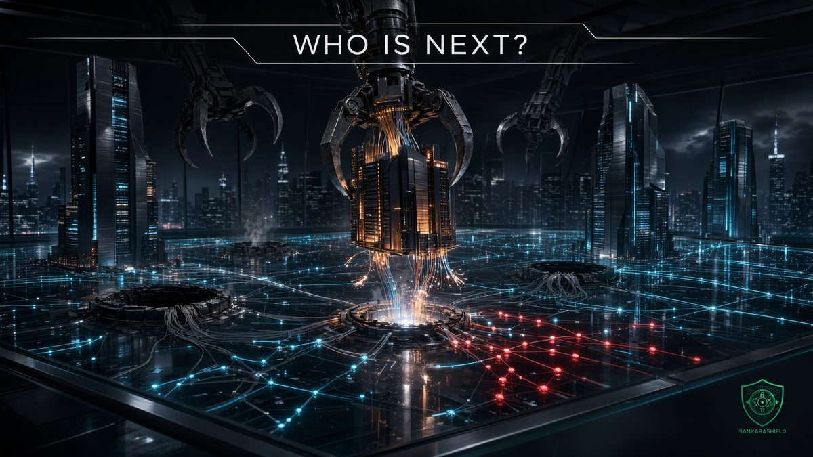

Extreme Networks may be for sale: what network teams should do before the map changes again.

Nothing has been signed. No offer has been announced. And yet, if you run a campus network, this is the right week to read your contracts.
On Friday 6 November 2026, Reuters reported that Extreme Networks is exploring a sale after receiving inbound acquisition interest. It is one more sign that enterprise networking is getting smaller at the top, little more than a year after HPE closed its $14 billion purchase of Juniper.
This article separates what is known from what is guessed, then focuses on the part you actually control: how exposed your network is to a vendor decision you will not be consulted on.
WHAT WAS REPORTED
THE PROCESS — according to people familiar with the matter, quoted anonymously by Reuters, Extreme is working with an investment bank after being approached by interested parties. Coverage of the report describes the process as early and exploratory.
THE POSSIBLE BUYERS — the sources named Fortinet, Cisco and NetApp as potential strategic buyers, among others. Being named does not mean being at the table: no report says any of them has made an offer.
THE RESPONSES — Extreme and NetApp declined to comment to Reuters. Fortinet and Cisco did not immediately respond.
THE MARKET — Extreme is valued at about $3 billion. Its shares rose by double digits on the news, with reports ranging from about 13% to 17% depending on the time of day.
WHY EXTREME IS WORTH A LOOK
This is not a rescue. Extreme published its fiscal first-quarter results on 28 October, for the quarter ended 30 September 2026. Revenue reached $341.1 million, up 10% year over year. SaaS annual recurring revenue reached $264.7 million, up 22%. GAAP net income was $16.0 million, and cash stood at $244.5 million. Full-year revenue guidance is about $1.40 to $1.41 billion.
The most telling number is the software mix. Extreme says Platform ONE, its AI-focused management platform, now represents more than 50% of subscription bookings. In August, its CEO put that share at over 30%.
So a buyer would not only be purchasing switches and access points. It would be purchasing recurring revenue and a management layer that sits between customers and their networks. That layer is also where customer dependency tends to grow.
A MARKET THAT KEEPS SHRINKING
HPE completed its Juniper acquisition on 2 July 2025, more than 17 months after announcing it and days after settling a US Justice Department challenge. The reported remedies included selling HPE's Instant On business and licensing the source code of Juniper's Mist AIOps platform through an auction. HPE already owned Aruba, so one company now holds two major enterprise networking brands.
Extreme knows this story from the other side. It grew by acquiring others, including Avaya's networking business, Brocade's data center networking business and Aerohive. Many of its customers have already lived through a product line changing owners.
The question is not whether consolidation is good or bad. For an operator, it comes down to something simpler: fewer independent vendors usually means fewer alternatives at renewal, and less leverage when you negotiate.
WHAT EACH NAME WOULD MEAN
What follows is my own analysis, not reporting. None of these deals exists.
FORTINET — it already sells its own switches and access points, tied closely to its firewalls. Extreme would add scale in campus networking and a large installed base. Customers should expect the network to be pulled toward the security platform, and should ask what that means for anyone who does not run Fortinet firewalls.
CISCO — the overlap would be heavy, because Cisco already sells campus switching, wireless and cloud management. The natural question for customers is which product lines survive and for how long. After the time HPE and Juniper spent with regulators, a deal of this kind could also draw close attention, even at this size.
NETAPP — the least obvious name. A storage company moving deeper into networking would have less product overlap, so existing lines might be safer in the short term. The open question would be long-term commitment to a business outside its historical core.
ANOTHER BUYER — the reports say "among others", so the final owner may not be on this list. A financial buyer, for instance, could raise different questions, around pricing and support costs. Or no deal may happen at all.
WHAT CHANGES WHEN A VENDOR CHANGES HANDS
The hardware in your racks keeps forwarding packets the day a deal closes. The risk arrives later, and it usually arrives in five places:
ROADMAP — overlapping products get rationalized. A platform you just standardized on can become the one that is no longer the priority.
LICENSING — subscription terms, bundles and tiers can be redesigned. The more features sit behind a cloud license, the more exposed you are.
SUPPORT — teams merge, escalation paths change and experienced engineers leave. You often feel this before any official announcement.
SECURITY — advisories and patches depend on people and processes that may be reorganized. In edge and network equipment, slow patching is not an administrative detail. It is a real exposure.
PARTNERS — your reseller or integrator may lose its status or margin, and the person who knows your network may not be there next year.
None of this is certain in any given deal. All of it is worth planning for.
WHAT TO DO THIS QUARTER
This list applies whichever vendor you run. Today's headline is Extreme; the next one may be yours.
INVENTORY THE ESTATE — list every switch, access point, controller and license, with its end-of-support date. Add each dependency on cloud management: what still works if the portal is unavailable or the subscription lapses?
READ THE CONTRACT — find renewal dates, auto-renewal clauses, price protection and anything covering a change of control or assignment. Have legal or procurement confirm what you find.
BE CAREFUL WITH LONG RENEWALS — a multi-year term can protect you or trap you. If you sign now, negotiate price caps, support commitments and exit terms in writing.
GET THE ROADMAP IN WRITING — ask your account team for end-of-sale and end-of-support commitments on the platforms you depend on. A slide is not a commitment.
OWN YOUR CONFIGURATION — export configurations on a schedule and keep them in version control, outside the vendor's cloud. Then test it: rebuild a device from your backup, without the vendor's portal.
FAVOR OPEN STANDARDS — EVPN-VXLAN, OSPF, BGP, LACP, 802.1X and RADIUS keep your design portable. Note every proprietary feature you rely on, because each one is a migration line item. Export your telemetry through standard interfaces where you can.
TRACK THE SECURITY SIGNAL — record who publishes advisories, how quickly patches arrive and how they reach you. Watch those numbers over time. They are an early warning if support starts to slip. Keep management interfaces off the internet regardless of who owns the vendor.
TEST A SECOND OPTION — run a small pilot with another vendor at one branch or in a lab. It gives you real migration data, a credible position at renewal and a team that knows there is another way.
WRITE THE ONE-PAGE PLAN — who owns the decision, what triggers action, and how much a migration would cost. Do this while it is calm, not on the morning of the press release.
IF YOU RUN EXTREME TODAY
Do not panic, and do not rip anything out. A report based on anonymous sources is not a reason to replace a working network. Extreme's own figures show a growing business, and the process may lead nowhere.
Keep patching and operating as normal. Do start the inventory and contract review now, and ask your account team direct questions. They may not be able to say much, but their answers on support and roadmap commitments are worth having in writing.
WHAT TO READ WITH CARE
The sale process comes from anonymous sources reported by Reuters on 6 November 2026, and no transaction is guaranteed. I found no later update when writing this on 8 November. Fortinet, Cisco and NetApp have not confirmed any interest. The financial figures come from Extreme's results filed with the SEC. Reports of the share price move vary with the time they were taken. Details of the HPE settlement are as reported in 2025, and descriptions of the remedies differ slightly between sources. The analysis of each possible buyer and the action list are my own opinion, not a statement from any of these companies, and do not constitute investment advice.
THE UNCOMFORTABLE PART
Most teams learn how dependent they are on a vendor on the day that vendor changes. By then, the contract is signed, the roadmap has moved and the leverage is gone.
You cannot control who buys whom. You can control how long it would take you to respond.
So ask the question while it is still hypothetical: if your main network vendor were acquired tomorrow, how long would it take you to know what breaks?